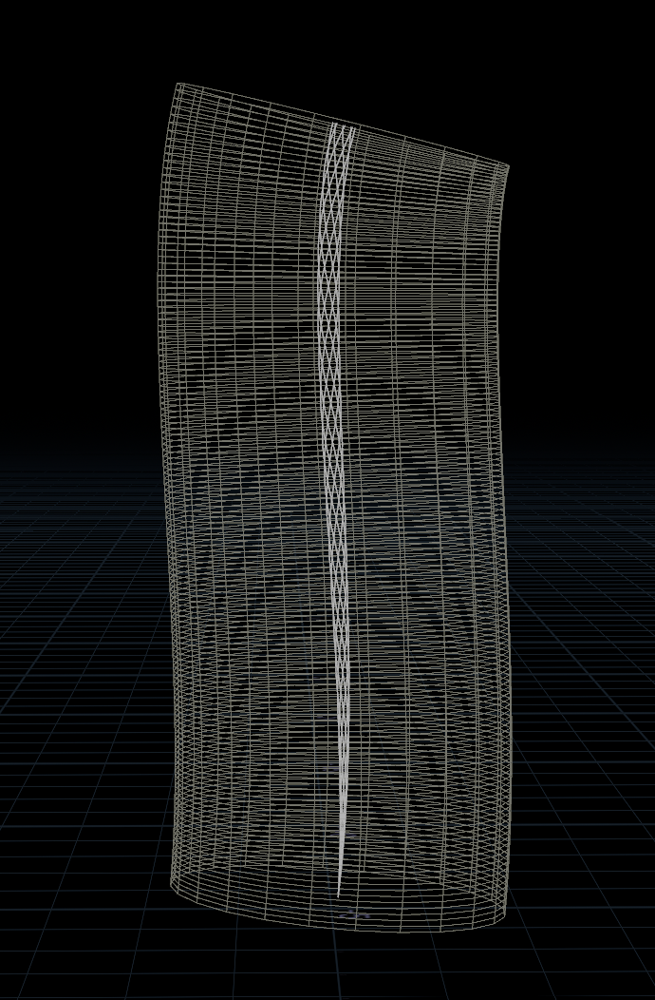
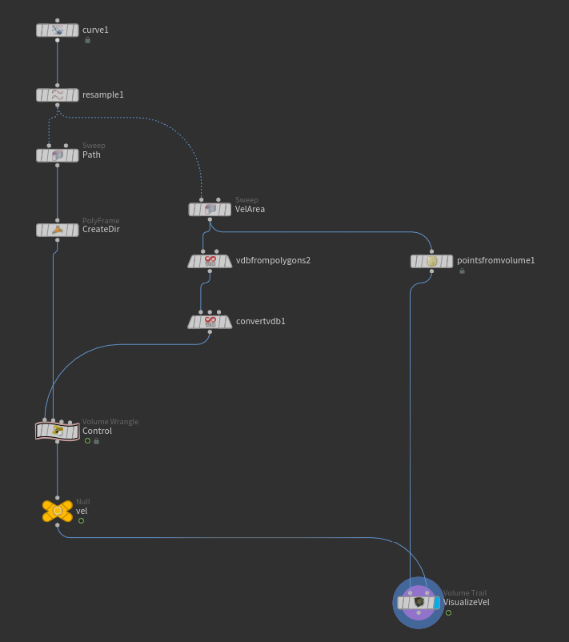
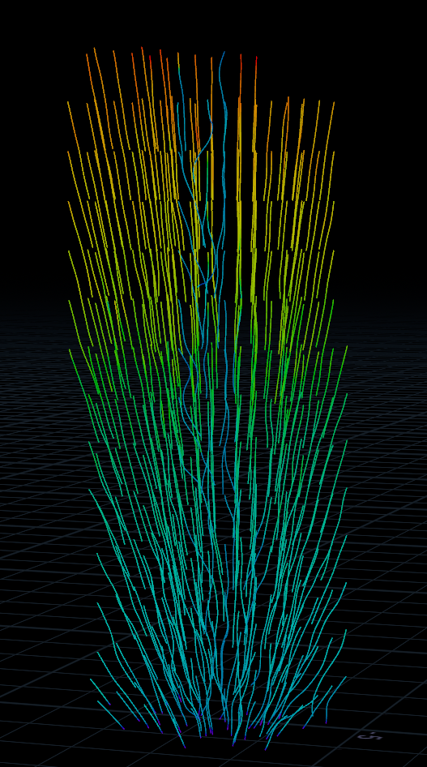

Week 04 - Particles Simulation | Refining Lighting and FX
Jan 27 - Feb 01, 2026
Mentors Feedback and Suggestions
Shot 1 Lighting: Darker is good but needs more time on look development
Shot 1 Fluid: Should emit more from environment rather than itself
Shot 4: improve lighting to show depth like in references
Shots 3-5: transition from particles in shot 3 to shot 5 needs clarity (dry to liquid progression)
Shot 6: Add more floating objects
Completed
Team Tasks
Shot 1-2: Change the fluid to particles and refine the look of the particles
Shot 4-5: Refine the motion and look of the particles and set up lights for render
Applied materials
Generated designs for objects in final shot with copilot
Updated lighting in shot 1, shot 2 and final shot
Individual Tasks
Shot 3: Adjust the look of the particles
Shot 6: Adjust path and increase number of the floating objects
To-Do Lists
Team Tasks
Shot 2: Refine the curve path and add variations to the color flows
Shot 4-5: Refine the look of particles
Custom height map for objects post-printing
Render AOVs
AOV testing
Individual Tasks
Shot 3: Refine particles material
Shot 6: Shot 6: Add colorful particles floating together with the objects
Dropping Particles Effects
Process
Particles Source
Aminate the particles source (sphere) with mountain node
Use 'Attribute from Map' node to assign color to the source from texture map
Velocity Field

Create path and tube to contain velocity

Setup velocity

Visualize velocity
Collision
In POP Net, use 'Static Object' node to assign a collider